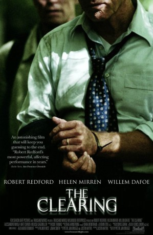
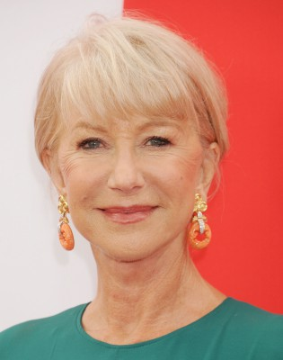
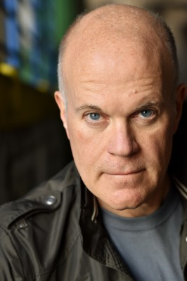
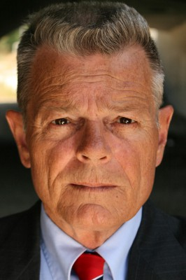

#9591 Anatomie einer Entführung
 
 IMDB-Wertung: 5.9 / 10
IMDB-Wertung: 5.9 / 10  Metascore: 0
Metascore: 0 
After decades of happy marriage and a life surrounded by luxury and wealth, Wayne Hayes, a successful car-rental businessman and his loving wife Eileen, are looking forward to a tranquil and comfortable retirement. However, the dreams of a peaceful life will eventually crumble like a pack of cards, when at gunpoint, Arnold Mack, a disgruntled former employee, will abduct Wayne in broad daylight right in front of his mansion in Pittsburgh. Suddenly, the life of the accomplished entrepreneur and seasoned negotiator rests entirely in the hands of his nervous, yet ruthless kidnapper who has nothing to lose and everything to gain. This is Wayne's most important negotiation in his life, nevertheless, has he the strength to succeed?
Jahr: 2004
Dauer: 94 Minuten
FSK: 12
Land: Deutschland Studio: 20th Century Fox Home EntertainmentTonspuren: DTS - ,
Untertitel:
Auflösung: 1080p (1920x1048) Größe: 6707 MB
Genre: Thriller, Drama, Mystery
Regisseur: Pieter Jan Brugge
Drehbuch: Pieter Jan Brugge, Justin Haythe, Justin Haythe
Soundtrack: Craig Armstrong
Darsteller:
 Robert Redford als Wayne Hayes
Robert Redford als Wayne Hayes-  Helen Mirren als Eileen Hayes
 Willem Dafoe als Arnold Mack
Willem Dafoe als Arnold Mack Alessandro Nivola als Tim Hayes
Alessandro Nivola als Tim Hayes Matt Craven als Agent Ray Fuller
Matt Craven als Agent Ray Fuller- Melissa Sagemiller als Jill Hayes
 Wendy Crewson als Louise Miller
Wendy Crewson als Louise Miller Larry Pine als Tom Finch
Larry Pine als Tom Finch- Diana Scarwid als Eva Finch
- Elizabeth Ruscio als Cindy Mack
 Gwen McGee als Agent Kathleen Duggan
Gwen McGee als Agent Kathleen Duggan- Sarah Koskoff als Lane Hayes
- Graciela Marin als Graciela
-  Mike Pniewski als Detective Kyle Woodward
- Geoff McKnight als John Dewitt
 Audrey Wasilewski als Lisa
Audrey Wasilewski als Lisa-  Peter Gannon als Agent Elkins
- Matt Miller als Another Agent
- Mark Emery Moore als Agent Sullivan
- Joel Nunley als Waiter
 Ted Manson als Robert Gidden
Ted Manson als Robert Gidden- Jackie Goldston als Reporter (uncredited)
- Mark Golik als Convention attendee (uncredited)
 John W. Iwanonkiw als FBI Driver (uncredited)
John W. Iwanonkiw als FBI Driver (uncredited) William Kania als Subway Patron (uncredited)
William Kania als Subway Patron (uncredited) Phil Nardozzi als Subway Passenger (uncredited)
Phil Nardozzi als Subway Passenger (uncredited)- Nathan Wright als Airport Passenger (uncredited)
- Sarah Spencer Yerger als Reporter (uncredited)
- John Yost als FBI Agent (uncredited)
- Tom Arcuragi als Mr. Schmidt
- Jacqi Loewy als Agent Crew
- Tony Amen als Customer in Supermarket (uncredited)
- CB Hackworth als Reporter (uncredited)
- Alex Houvouras als Reporter (uncredited)
- Jackson Nunn als Subway Passanger (uncredited)
- Sandy Slicker als Subway Rider (uncredited)
Datei: X:\2004(A-F)\Anatomie einer Entführung (2004, FSK12, 1920x1048).mkv seit 14.09.2018
Festplatte: HD 2003-2004-2005(A-F)
 Es gibt insgesamt 39 Filme in der Gruppe '2004(A-F)'
Es gibt insgesamt 39 Filme in der Gruppe '2004(A-F)'